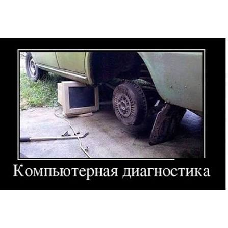

Эта система подойдёт тебе, если ты узнаёшь себя
- Устал от сезонных провалов: клиенты то есть, то нет.
- Делал попытки в привлечении клиентов, но они не дали результата.
- Платишь за маркетинг, ведение соцсетей, настройку карт — а результата нет.
- К тебе приезжают дешёвые клиенты, которые скорее занимают место, чем приносят прибыль.
Почему так происходит? Ведь ты уже не первый год в этом бизнесе
Работаешь не хуже, а может, и лучше других. Вкладываешь деньги в оборудование, в запчасти, в мастеров. Честно делаешь свою работу — но клиентов всё равно не хватает.
Думаешь о продвижении: вкладываешь деньги в рекламу, Авито, Instagram, карты.
Но в итоге это либо приносит слабый результат, либо вообще никакого.

Откуда вдруг взялась эта проблема?
В теории всё кажется простым. Один раз правильно настраиваешь механизм по привлечению клиентов — и:
- это даёт поток с записью на месяцы вперёд;
- клиенты советуют тебя друг другу;
- боксы заполнены;
- ты стабильно получаешь прибыль и уверен в завтрашнем дне.
А в реальности процесс привлечения клиентов выглядит как запуск старой дизельной машины в −20. Мягко говоря, непредсказуемо.
Попытки настроить этот процесс создают ещё больше вопросов. Ты тестируешь рекламу, которая работает у конкурентов, но почему-то она даёт слабый результат — а человек, который отвечает за настройку рекламы, разводит руками.
Что в итоге? Думаю, ты не подозревал, но…
Отсутствие стабильного количества клиентов не даёт возможности развиваться.
Чувствуешь себя не очень, начинаешь больше работать — как итог, больше уставать и хуже высыпаться. Бизнес становится источником стресса, и ты переносишь этот стресс на родных и близких.
Ты пытаешься разобраться в сайте, в SEO, в настройке карт. Но у тебя нет на это времени.
Ты — владелец СТО, а не маркетолог. И пока ты пытаешься быть всем сразу, твой бизнес стоит на месте.
Правда в том, что нет одного механизма, который решает всё
Нельзя просто «запустить рекламу» и ждать чуда. Нельзя просто «сделать сайт» и надеяться, что клиенты придут.
Проблема не в инструментах, а в том, как их используют.
Тебе нужен не набор случайных инструментов, а простой понятный механизм привлечения клиентов.
Дальше — кто я и как именно устроен этот механизм на практике.
Читать далее